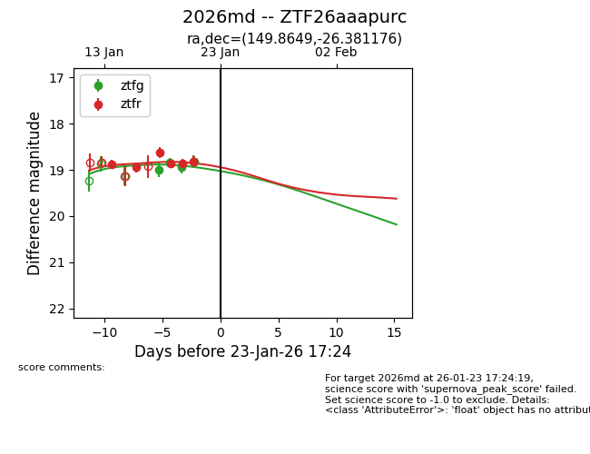
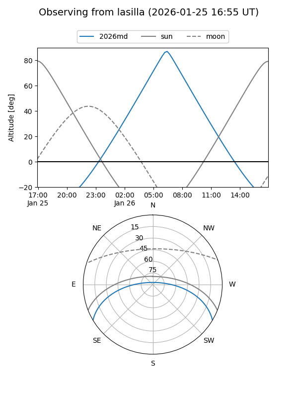
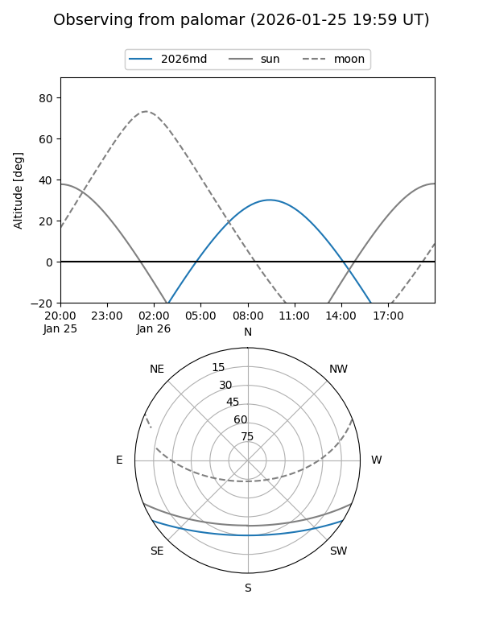
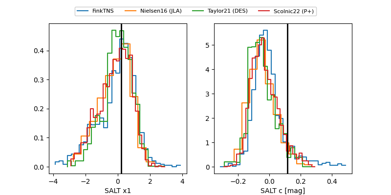

2026md
Target 2026md at 2026-01-20 17:11
Aliases and brokers:
FINK: link
Lasair: link
ALeRCE: link
TNS: link
YSE: link
alt names
ZTF26aaapurc (ztf,fink_ztf)
2026md (tns,yse)
Coordinates:
equatorial (ra, dec) = 149.8649,-26.38118
equatorial (HMS+DMS) = 09:59:27.56,-26:22:52.23
galactic (l, b) = (261.5850,+22.36770)
Flags:
Photometry:
last ztfg=18.83, ztfr=18.87
2 ztfg, 4 ztfr detections
Lightcurve

Visibility


Additional plots
